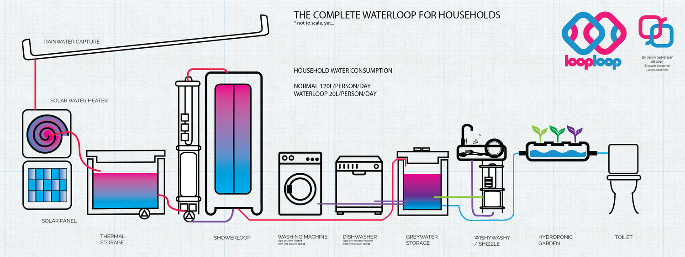
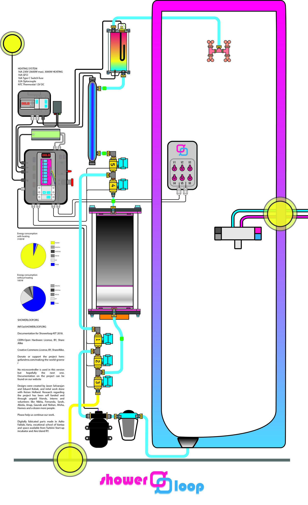
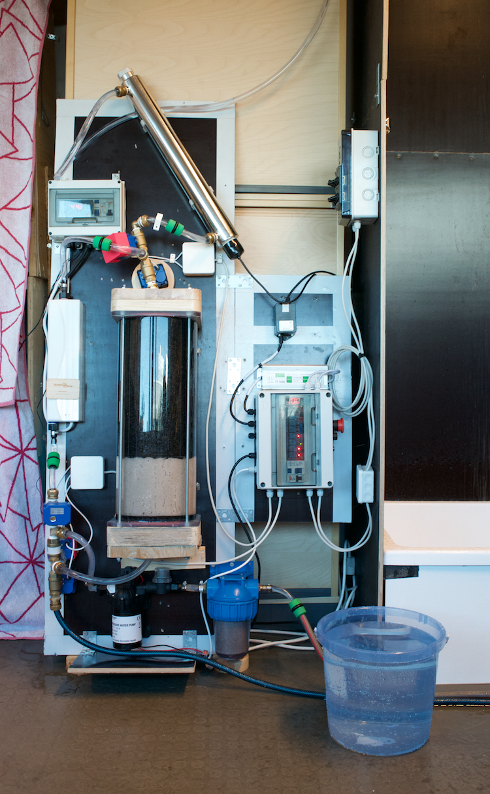

showers revision 8914
^ Projects infobox ^^
| image | Shower.jpg |
| designers | |
| date | |
| vitamins | |
| materials | |
| transformations | |
| lifecycles | |
| tools | [[wrenches|Wrenches]] |
| parts | [[frames|Frames]], [[nuts|Nuts]], [[bolts|Bolts]], [[hoses|Hoses]], [[fluid_pumps|Fluid pumps]], [[couplers|Couplers]], |
| techniques | [[tri_joints|Tri joints]], [[bolting|Bolting]] |
| files | |
| suppliers | |
| git | |
Introduction
A shower is a place in which a person bathes under a spray of typically warm or hot water. Indoors, there is a drain in the floor. Most showers have temperature, spray pressure and adjustable showerhead nozzle. The simplest showers have a swivelling nozzle aiming down on the user, while more complex showers have a showerhead connected to a hose that has a mounting bracket. This allows the showerer to hold the showerhead by hand to spray the water at different parts of their body. A shower can be installed in a small shower stall or bathtub with a plastic shower curtain or door. Showering is common in Western culture due to the efficiency of using it compared with a bathtub. Its use in hygiene is, therefore, common practice. A shower uses less water on average than a bath: 80 litres (18 imp gal; 21 US gal) for a shower compared with 150 litres (33 imp gal; 40 US gal) for a bath.
Challenges


